Sur 4 créatures, une par matière. Chaque créature reçoit une carte de relief (la lumière accroche les mèches, les écailles, les plumes, les fissures) et une carte de brillance (pelage mat, écailles luisantes, cristaux très brillants). La forme et la peinture ne changent pas. Rien n'est encore appliqué aux autres créatures.
Avant, le relief ressemblait à de l'écorce froissée. Maintenant, chaque plume est dessinée : les plumes se chevauchent en rangées (la pointe de l'une se pose sur la suivante), avec un sillon net entre les plumes et un tuyau central. Sur les ailes, les longues plumes partent du corps vers le bout de l'aile ; sur la queue, vers l'arrière ; sur le corps, des plumes arrondies, pointe vers le bas, en relief plus doux (le corps est déjà sculpté). Plume satinée, creux entre les plumes mats.
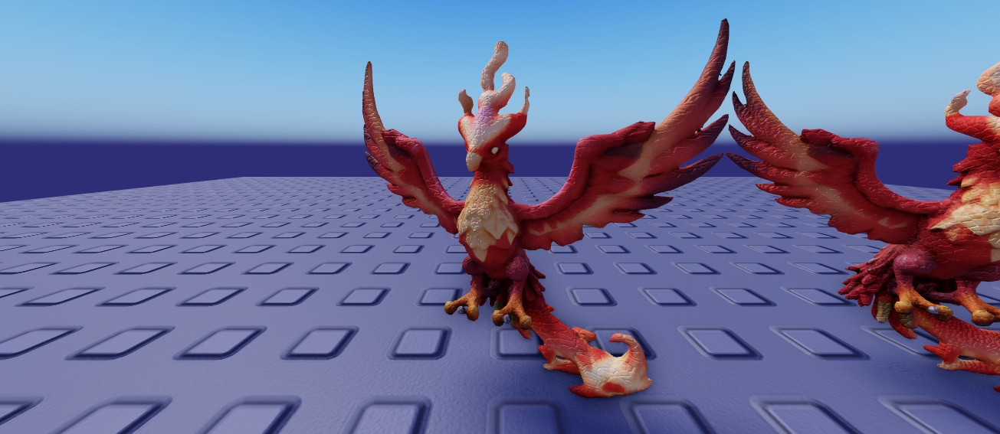
En jeu, avant : grain flou
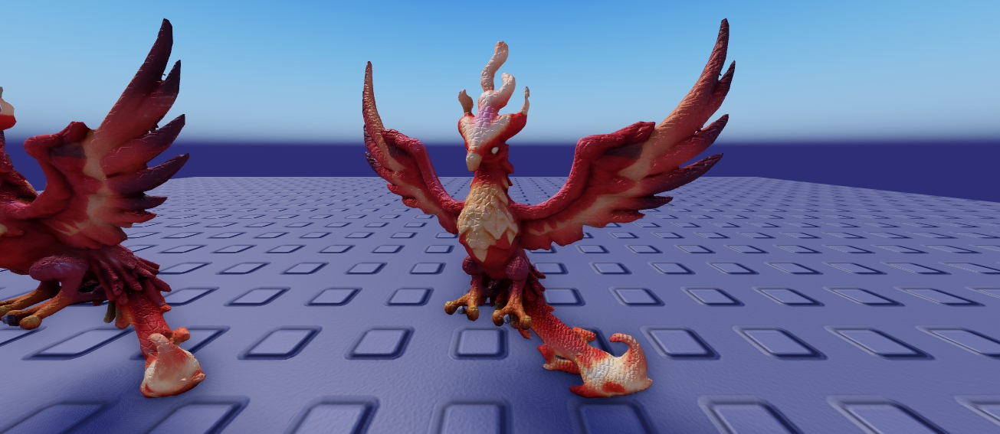
En jeu, après : plumes en rangées sur le poitrail, la queue et les ailes
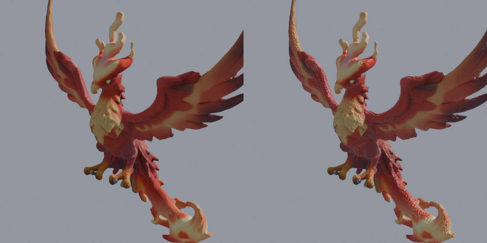
Rendu Blender, avant · après
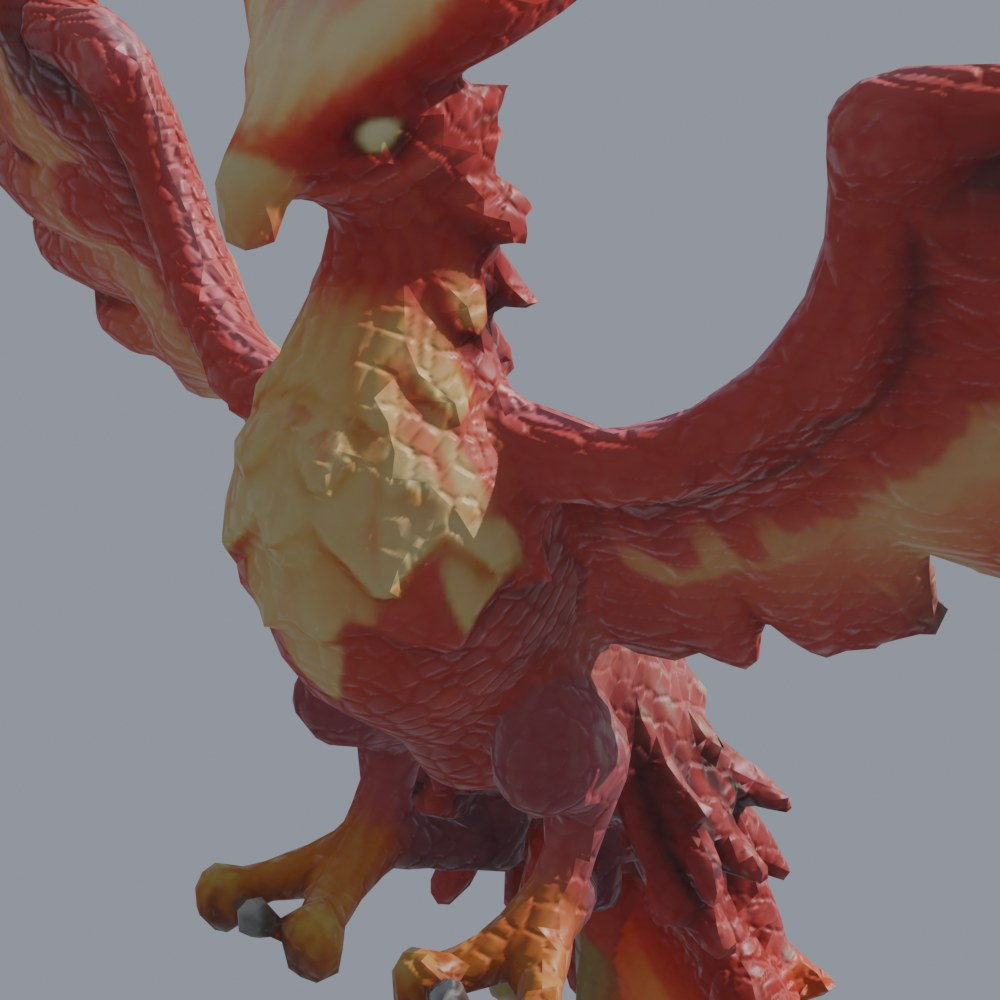
Gros plan Blender (après)
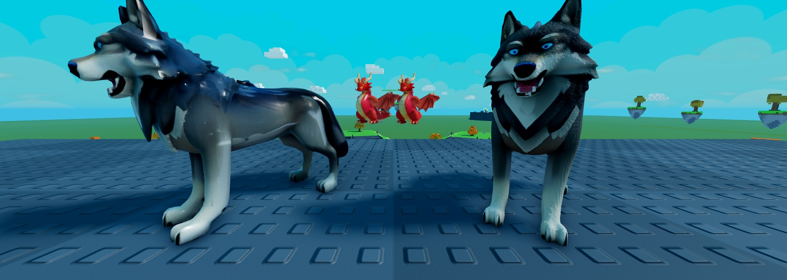
Loup : fini l'aspect plastique brillant ; pelage mat avec des mèches (bien visibles sur le poitrail et les pattes)
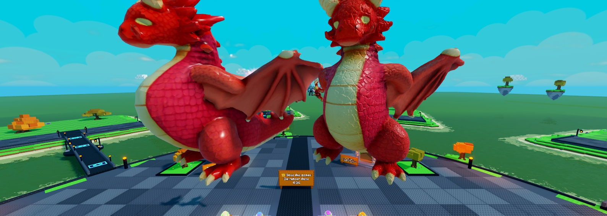
Dragon : écailles en relief qui accrochent la lumière ; ventre plus mat
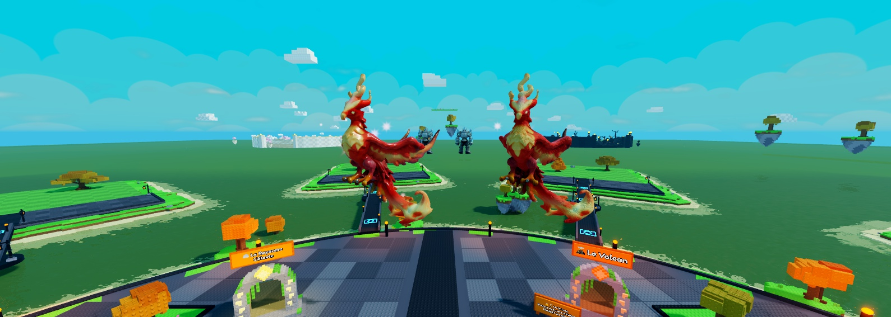
Phénix (de loin) : plumage plus mat et plus texturé
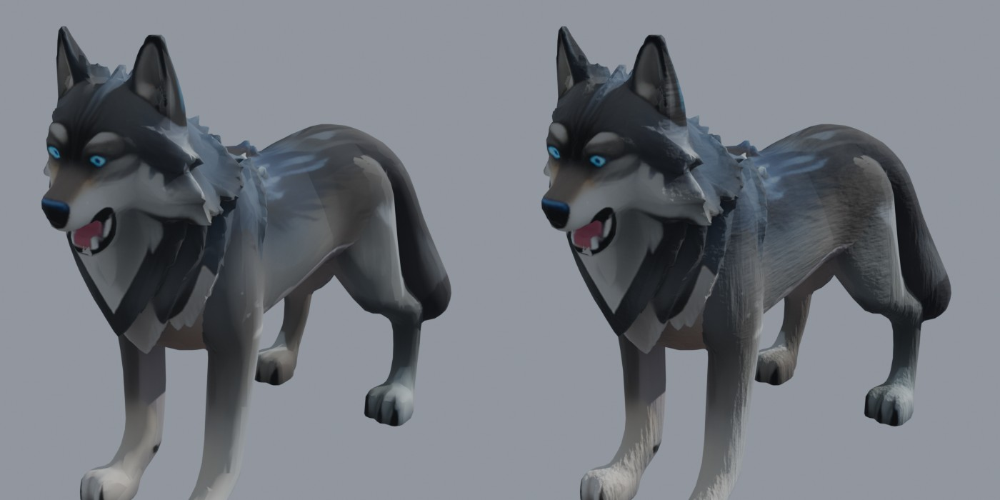
Poils : mèches dans le sens du poil (tête vers queue, de haut en bas sur les pattes)
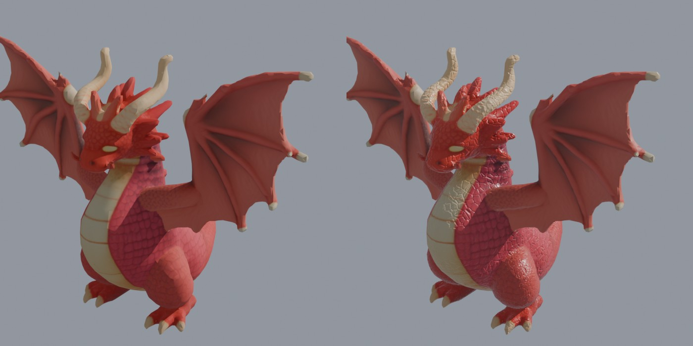
Écailles : plus petites sur les pattes, cornes et griffes lisses, ailes en fines rides
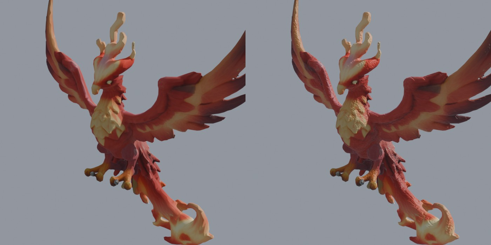
Plumes : longues plumes dans le sens des ailes, petites plumes sur le corps
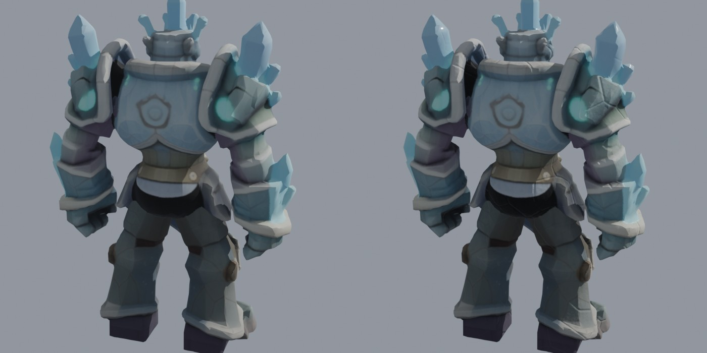
Roche et cristal : grain et fissures sur la pierre, cristaux lisses et très brillants
| Point | Proposition |
|---|---|
| Ventre du Dragon | Les plaques claires du ventre ont encore un peu l'air craquelées : je les remplacerai par de larges bandes lisses. |
| Plumes | Le plus discret des quatre : je peux les marquer davantage. |
| Force du relief | Réglable par matière (plus ou moins marqué). |
| Les 109 créatures | Chaque créature reçoit sa matière (poils, écailles, plumes, roche, gelée…), et les créatures mixtes en ont plusieurs (griffon : plumes sur les ailes, poils sur le corps). Environ 10 minutes de calcul, puis envoi des images. |
| Téléphones | Deux images de plus par créature, sans pièce en plus. Un interrupteur permet de tout couper (CreatureSkins.UseDetails). |